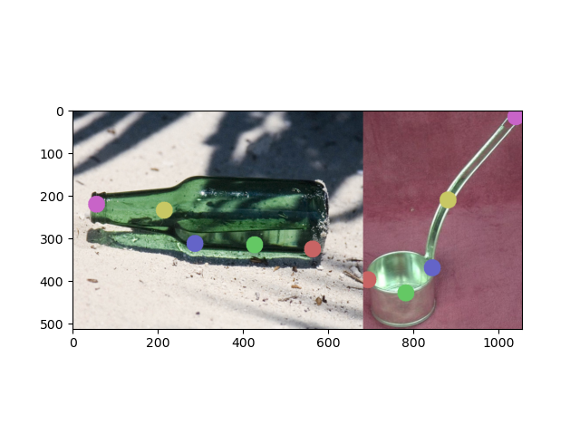

DIFT
The goal of this research project is to determine if DIffusion FeaTures (DIFT) can be used to extract functional correspondences between objects in an image.
DIFT is a new methodology of extracting semantic correspondence between a pair of images using implicit knowledge from diffusion networks that are trained on similar images. Semantic correspondence is a visual correspondence between different objects of the same category. For example, the eyes of two different dogs or the camera lens of two different phones. Functional correspondence is a visual correspondence between, possibly, two objects of different categories, but can be used for the same task or purpose. An example of this is the handle on a pan and the handle on a basket or the opening of a shoe and the opening of a water bottle (if the task is pouring something).
My task in this research project is to complete a preliminary assessment of the feasibility of DIFT aiding in finding functional correspondences.
DIFT uses the Stable Diffusion model to extract correspondences between pairs (or more) of images. The Stable Diffusion model, in short, is a model that is used to generate images using a prompt. The model does this by adding and removing noise to the image. DIFT makes use of these intermediate noisy images to extract the correspondences between images.
My main task is to use a dataset of known functional correspondences between images and test if DIFT can find those correspondences given the task as the prompt. If DIFT could complete this with no additional support, then the project is complete. The relaxed goal of this preliminary research is to see if a change in the prompt helps or changes the correspondences found in the images.
The first task was to reformat the images and the known correspondences (keypoints) to be used in DIFT. The main issue was that the images were all of different sizes and that the correspondences were not given in x,y coordinate form, but percentages across the axes.
After formatting the images, we ran a quick test on a pair of images to see how the correspondences compared to the true points. We found that with and without the prompt of the task, the correspondences were generally incorrect. That being said, the prompt did change the location of the correspondences.
To better gauge how DIFT is performing, we use a metric to determine if DIFT found a correct correspondence, and then we run DIFT on the entire dataset, once with no prompt and once with the task prompt. The metric we use is if the found correspondence is within 23 pixels of the true correspondence, then it is a hit, otherwise it is a miss.
There is currently a computational barrier to running this test on my local computer, so this task is being postponed until access to the server is allowed.